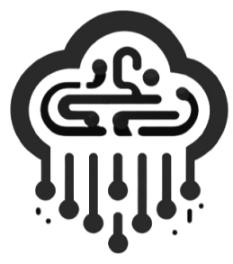
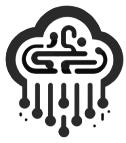

FRC #9611 - CyberRain
A Equipe Pioneira de
FRC de
Joinville
 

CyberRain
9611
A equipe CyberRain é pioneira em Joinville no campeonato da FIRST Robotics Competition (FRC). Composta por alunos da Escola SESI de Referência, com idade média entre 15 e 17 anos, a equipe tem se destacado por sua dedicação, criatividade e inovação.
Na Música:
“AUMENTO GRADUAL DA INTENSIDADE SONORA”
"crescendo", in Dicionário Priberam da Língua Portuguesa [em
linha],
2008-2023, https://dicionario.priberam.org/crescendo.
A nova temporada da FRC chegou e com ela muita inovação! Nossa equipe está a todo vapor e dando o nosso melhor para a competição! Aguardamos vocês em Brasília!!
A FIRST® é uma ONG sem fins lucrativos que tem como objetivo criar e preparar a nova geração de líderes e profissionais capazes de criar soluções para os grandes problemas que assolam nossa sociedade nos dias atuais.